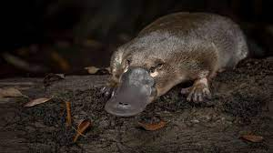

O ornitorrinco é um animal extremamente exótico que apresenta características que lembram as de aves e répteis, uma vez que possui bico e é capaz de botar ovos. É um animal encontrado apenas na Austrália e que apresenta hábito de vida semiaquático, sendo observado exclusivamente em ambientes de água doce. O ornitorrinco é um animal carnívoro que se alimenta de pequenos animais, como insetos e camarões. Os machos são capazes de produzir veneno, sendo essa substância utilizada para a defesa do território no período reprodutivo.Ornitorrincos são animais semiaquáticos que ocorrem em ambientes de água doce, tais como rios, lagoas e riachos. A espécie é endêmica da Austrália. Na Austrália Continental, a espécie é vista raramente movendo-se em ambiente terrestre, mas é frequentemente vista fora da água na Tasmânia.O ornitorrinco é um animal que apresenta uma dieta carnívora, alimentando-se de pequenos animais, como pequenos peixes, camarões, caranguejos e alguns insetos aquáticos. Para identificar suas presas, eles contam com a ajuda de seu bico, que tem cerca de 40 mil receptores que identificam sinais eletromagnéticos.
O ornitorrinco (Ornithorhynchus anatinus) é um animal que vive exclusivamente na Austrália e apresenta características muito peculiares. Apesar de botar ovos, ter uma estrutura semelhante a um bico e patas que se assemelham a de patos, esse animal é um mamífero. Classificado como monotremado, o ornitorrinco apresenta as características típicas da classe Mammalia: presença de pelos e glândulas mamárias. O ornitorrinco possui um corpo alongado repleto de pelos que apresentam coloração marrom. Sua cauda é larga e achatada, o que lembra muito a cauda dos castores. Na região localizada acima do bico, pode-se observar a presença de duas narinas. Os olhos e orelhas se situam lateralmente na cabeça.
